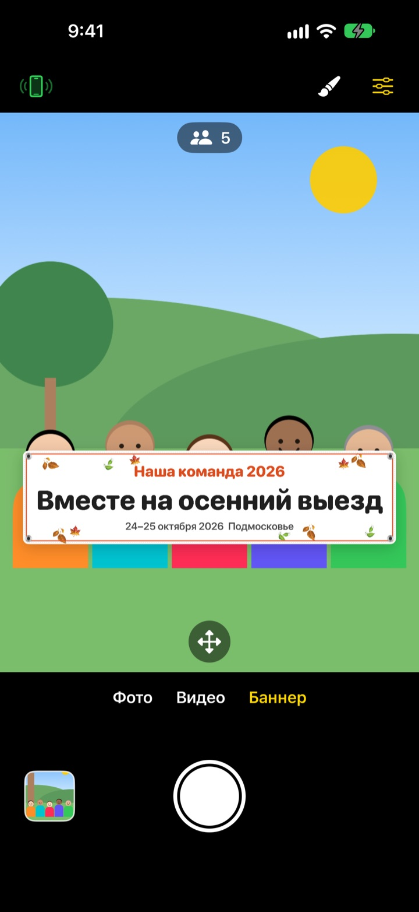
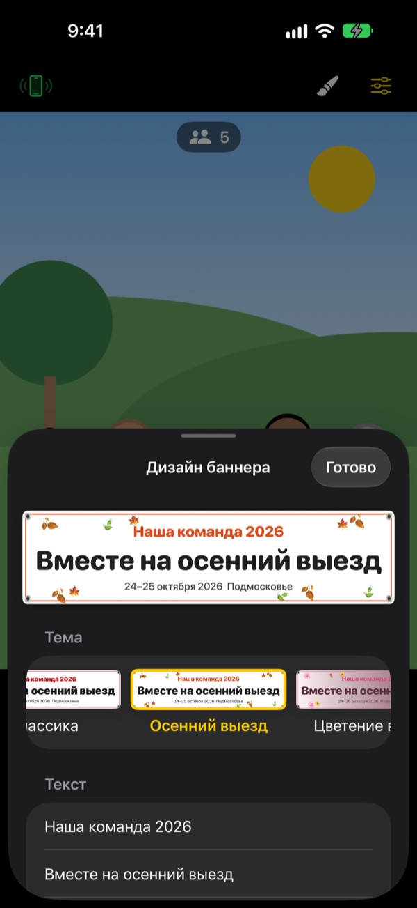

Групповое фото с баннером.
Печатать ничего не нужно
Напишите текст, выберите тему, и баннер встанет прямо перед вашей компанией. iPhone друга становится пультом по одному QR-коду, так что в кадр попадает и тот, кто снимает.
Все функции бесплатны. Нужна iOS 17 или новее.

Сделайте свой баннер
Поменяйте текст и выберите тему. Нажмите затвор, и, как в приложении, пойдёт обратный отсчёт на 3 секунды.
Заказываете баннер ради одного снимка?
Ради одного фото с выезда вы заказываете баннер, тащите его с собой, а потом не знаете, куда его деть. Снимать некому, и кто-то всё равно остаётся за кадром. ShutterLink ставит баннер прямо в кадр и превращает iPhone друга в пульт, чтобы на фото с баннером попали все.
Баннер под ваше событие за минуту
Выберите одну из 13 тем: осенний выезд, весеннее цветение, новогодний корпоратив, день рождения, день спорта, выпускной, свадьба, корпоративный семинар и другие. Затем напишите до трёх строк своего текста.
Можно сменить фон, шрифт, украшения, цвета и пропорции, а также добавить логотип. Материал на выбор: ткань, винил или бумага. Тканевый баннер провисает, мнётся и колышется на ветру, как настоящий.

Пульт без установки, по одному QR-коду
Нажмите кнопку пульта в левом верхнем углу, и появится QR-код. Друг наводит на него стандартную Камеру, и ShutterLink Remote сразу открывается как App Clip и подключается.
В живом превью на пульте виден даже баннер: выстроили кадр и жмёте на затвор. Снимок тут же приходит на iPhone-пульт, так что друг без приложения может сразу сохранить его и поделиться.
Три шага, и можно снимать
- 1
Поставьте iPhone
Откройте ShutterLink и закрепите телефон на штативе или полке.
- 2
Разместите баннер
Выберите внизу «Баннер», кнопкой с кистью задайте текст и тему, затем коснитесь пола там, где встанет компания.
- 3
Поднимите ладонь
Поднимите ладонь или нажмите затвор на пульте. Таймер отсчитает время и сделает снимок.
Всё для групповых фото
- Жест ладонью · затвор по хлопку
- Поднимите открытую ладонь к камере или громко хлопните один раз, и запустится таймер
- Затвор по улыбке
- Снимает сам, когда все улыбаются с открытыми глазами
- Таймер 3 · 5 · 10 · 20 · 30 с
- Голос считает вслух, вспышка мигает в такт, а пульт вибрирует в руке
- Попросить всех смотреть в камеру
- Нажмите, и iPhone-камера вслух позовёт всех посмотреть в объектив
- Серия 3 · 5 кадров
- Выбирает лучший кадр, где у всех открыты глаза. В галерее его можно заменить другим
- Число людей · края · уровень
- Считает людей в кадре, предупреждает, если кто-то у края, и показывает уровень при наклоне
- Интервальная съёмка от 3 с до 1 мин
- Запечатлейте закат или процесс работы с равными промежутками
- Управление камерой
- Фокус и экспозиция касанием, экспокоррекция, вспышка, сетка, зум от 0,5× до 10× (зависит от модели), фронтальная и основная камеры, видео
- Простой режим
- На пульте только одна большая кнопка затвора, справятся даже бабушки и дедушки
- Кнопки громкости · Camera Control
- Снимайте прямо на iPhone-камере, без пульта
В режиме баннера недоступны вспышка, серийная съёмка, зум и фронтальная камера. Таймер, затвор по ладони и пульт работают как обычно.
Все функции бесплатны
Бесплатно
- Режим баннера и 13 тем
- Пульт без установки (App Clip)
- Затвор по ладони, хлопку и улыбке, таймер
- Лучший кадр, подсчёт людей, уровень
- Видео и интервальная съёмка
Поддержать (по желанию)
- В настройках можно оставить маленькие, средние или большие чаевые
- Чаевые ничего не открывают и не ограничивают
Это не подписка: оплата разовая и только когда вы сами решите поддержать.
Без рекламы и без регистрации.
Вопросы и ответы
Что понадобится?
Установите ShutterLink на iPhone, которым будете снимать (iOS 17 или новее). На iPhone-пульт ничего ставить не нужно, интернет понадобится только при первом открытии App Clip. Включите Bluetooth на обоих телефонах и держите их рядом, обычно в пределах 10 м.
QR-код сканируется, но App Clip не открывается.
Проверьте, что iPhone-пульт подключён к интернету. Вместо QR-кода можно ввести в ShutterLink Remote четырёхзначный код с iPhone-камеры и нажать «Подключить». Также проверьте, не заблокированы ли App Clip в «Настройки › Экранное время › Контент и конфиденциальность».
Всё время висит «Поиск камеры…».
На iPhone-камере ShutterLink должен быть открыт на экране. Проверьте, что Bluetooth включён в «Настройки › Bluetooth» на обоих телефонах. Код меняется при каждом запуске приложения, поэтому после перезапуска используйте новый QR-код или код и нажмите «Повторить».
Появляется «Нет доступа к Bluetooth».
Включите ShutterLink в «Настройки › Конфиденциальность и безопасность › Bluetooth». Пульт работает как App Clip и может не отображаться в списке. Тогда отсканируйте QR-код ещё раз и нажмите «Разрешить» в запросе.
Превью дёргается или выглядит размытым.
Превью специально уменьшено, чтобы передаваться по Bluetooth. Сами фото и видео сохраняются в полном качестве iPhone-камеры. Стены, люди или большое расстояние между телефонами могут вызывать рывки, но затвор и остальные функции продолжают работать.
Где мои фото?
В приложении «Фото» на iPhone-камере и в галерее внутри приложения. На пульт тоже приходит копия, но сама она не сохраняется, поэтому сохраните её или поделитесь ею до закрытия пульта. Если в «Фото» ничего не появляется, разрешите доступ в «Настройки › Конфиденциальность и безопасность › Фото».
В видео нет звука.
Включите ShutterLink в «Настройки › Конфиденциальность и безопасность › Микрофон».
Можно подключить несколько пультов?
Да. Несколько iPhone могут подключиться по одному QR-коду или коду одновременно, и с любого из них снимает одна и та же камера.
Во время съёмки пропадает связь.
Пока ShutterLink открыт, экран не гаснет сам. Если заблокировать телефон боковой кнопкой или переключиться на другое приложение, связь прервётся, поэтому во время съёмки держите приложение на экране.
Фото куда-нибудь загружаются?
Нет. Два iPhone соединяются напрямую по Bluetooth, а фото и видео остаются только на iPhone-камере и подключённом пульте. Работает в горах и на пляже без связи, аккаунт не нужен.
Не помогло или нашли ошибку? Напишите на leeo@kakao.com. Укажите модели обоих iPhone и версии iOS, так разобраться получится быстрее.